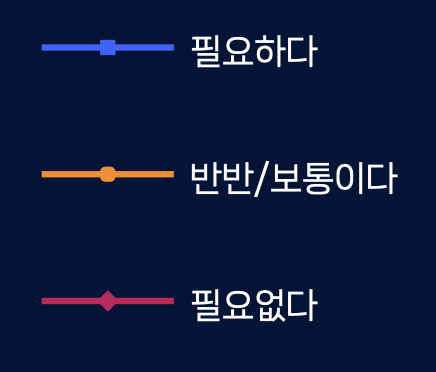

북한사회변동조사/통일 필요성 남한주민대상 영역별 남북통합지수 추이 남북통합지수 (Inter-Korean Integration Index: IKII)는 남한과 북한이 정치적, 경제적, 사회문화적, 의식상으로 통합되어 있는 수준을 계량적으로 보여주는 지표이다. 남북통합지수는 크게 구조통합지수와 의식통합지수로 구성되어 있다. 또, 구조통합지수와 의식통합지수는 영역별 (경제, 정치, 사회문화)로 나뉘어져 있다.  1/10 통합의 영역과 배점  Copyright © 2023 IPUS 서울대학교 통일평화연구원 all rights reserved